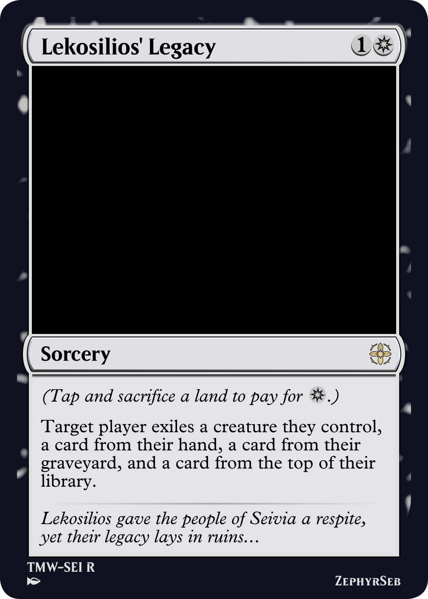
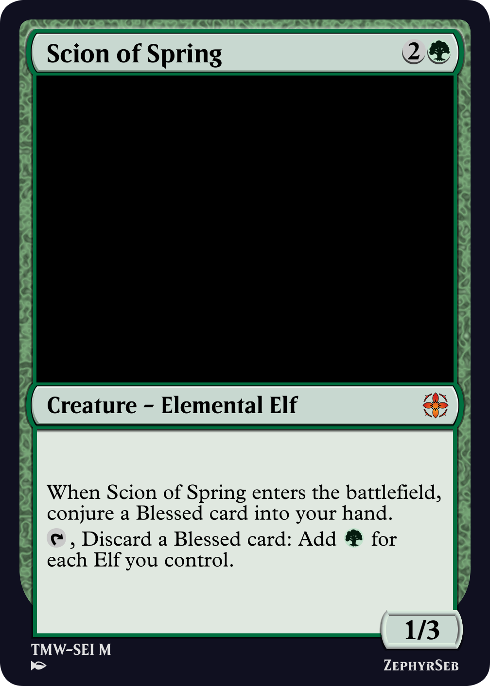
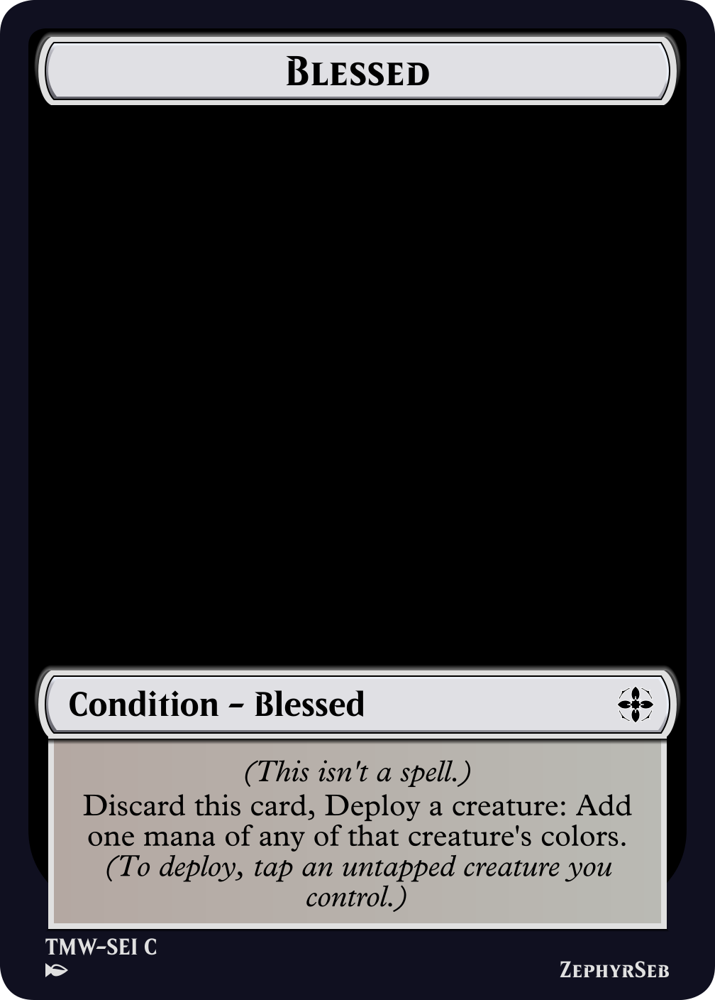
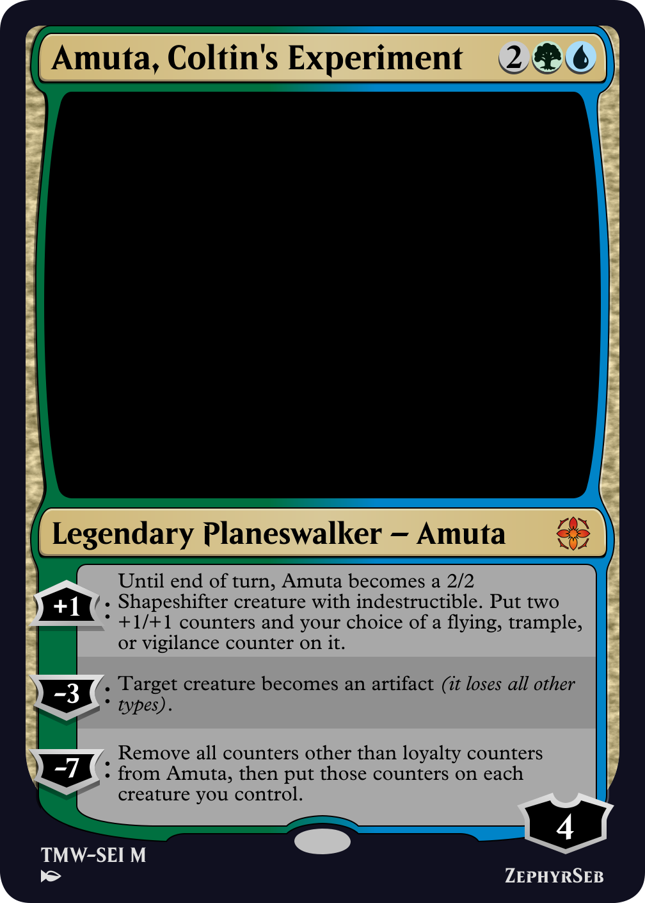
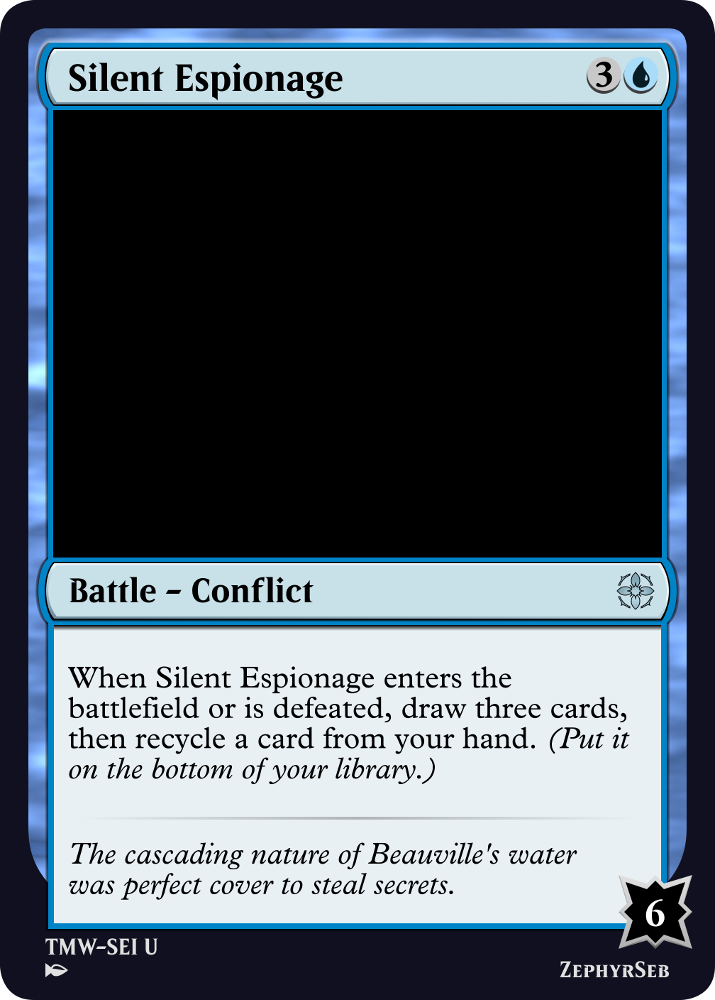
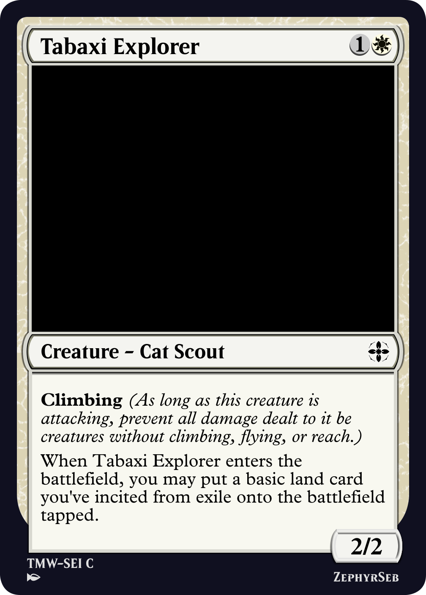
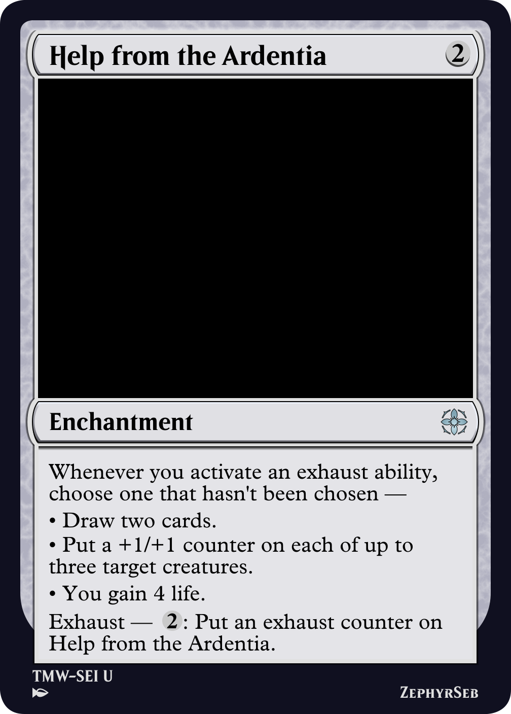
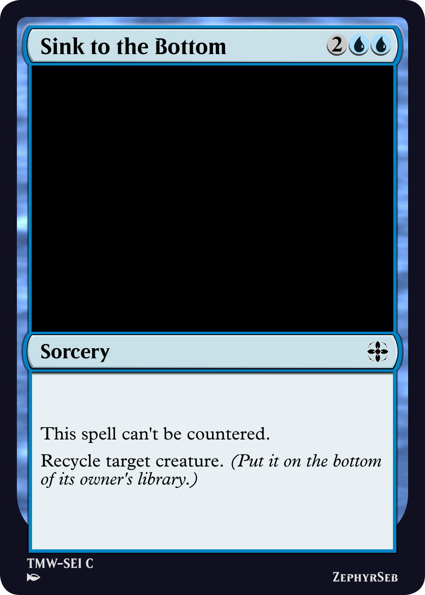

Thousands of years ago, a great war waged between the two Great Mages. It ravaged the land and brought the world to the brink of destruction. To save the people of the land, Lekosilios, the deity of the aether, sent them to a new world where they could begin again; a world without magic. But the people struggled. So Lekosilios compromised. The four gods of earth, fire, water, and air each planted a tree. These trees would be the sole source of magic across the land, and each god would oversee their tree. The four tribes of Seivia each claimed one tree, and worshipped their new protector. Lekosilios, however, faded from memory...

Lekosilios' Legacy
Seivia is a world that was visited as part of The Many Worlds campaign many of the cards on this website are based on. Today, I'm going to talk about the design of how the set came to be.
Seivia's story focused on something that the world lacks; metal. Translating this into magic's rules suggested the set could use an interesting restriction: it shouldn't have any artifacts in. To work out the repercussions of such a restriction, we need to focus on what artifact usually do in a magic set:
• All nonland colorless cards are usually artifacts.
• Artifacts offer curve filling creatures.
• Artifacts offer mana fixing or ramp.
• Artifacts offer colorless removal.
• Some artifacts feature subtypes such as equipment or vehicle.
• Many sets employ an artifact token, such as treasure.
Fortunately, colorless cards don't have to be artifacts, so colorless creatures, enchantments, and instants/sorceries can fill many of these roles. Additionally, auras can play in a similar space to equipment.
The most difficult item on this list to replace is actually the mana fixing artifacts offer. In most draft sets, some mana fixing is needed to help smooth over games where a player only draws one of their two colors. This is most often done with some artifacts that let you search for basic lands, as well as treasure tokens.


Scion of Spring // Blessed
A couple of recent sets (Vlad's Castle and Festiville) have featured a card type that are conjured into player's hands, usually to the opponent's detriment. These condition cards were initially designed as Wound cards, before wound was made into a subtype to future-proof the mechanic, which then subsequently turned up in Festiville. In the latter set, Frostbite conditions were used both to attack the opponent's library, but also as delayed card draw in the vein of a clue token. So why not make a positive condition card in lieu of a treasure token? That's where the Blessed condition comes in. It represents the ceremony that happens on Seivia where a member of one of the Seivian tribes travels to their deity's tree and receives their blessing, in the form of the ability to use magic. To match this theming, the card functions slightly differently to a treasure token and more closely to the convoke mechanic, as it requires tapping a creature to produce mana of that creature's colors. But as a card, it can also be discarded to other effects in the game.
In the story, a member of the Cult of Morrofin, Amuta, had arrived on the world and was causing chaos by turning things into metal. Due to this, her planeswalker card is the only card in the set that references artifacts.

Amuta, Coltin's Experiment
In addition to the absence of metal, magic in Seivia is a finite resource that is running out. Once again, magic in Magic is represented mostly through the instant, sorcery, and enchantment card types. So the set doesn't want to go overboard with the number of these. But a draft set can't be all creatures - it would be too aggressive. So it needs noncreature spells to fill the gaps. The other card types that typically appear in draft sets, land and planeswalker, also aren't suited for this role. Fortunately, a few years ago Magic introduced another card type that is perfect for this role. A world where resources are scarce leads to conflict. And conflict is a type of Battle. First seen in March of the Machine, battles were introduced to represent the Phyrexian Invasion. In this set, they're used to represent local conflicts between tribes, with a new battle subtype called conflict. Conflicts all have an enters the battlefield trigger, so can replace slots that would normally be filled by sorceries in the set.

Silent Espionage
Early in set design, the set was given an exile matters theme, which stuck throughout the design process. Unlike graveyard matters themes, supporting exile is a slightly more difficult task, as cards rarely end up there naturally. Exile matters was pushed by a threshold-like ability word, preserve, which turns on when you have seven cards in exile. The name was chosen to represent the denizens of the world trying to eke out what they could of their magic without wasting any.
To support getting cards into exile, two exile-based mechanics were added; incite, originally designed for the Azure Archives to unify impulse-draw effects, and a mechanic named burn, which was a kicker spell that gave you a boost if you exiled a card from your hand with a certain mana value.
After some early testing, burn was found to be too detrimental, as you would be spending two cards to get the effect of one, so it was scrapped. (It also suffered from sharing its name with a mechanic coming up in a future set.) It was replaced with indulge, which is still a kicker effect, but asks for a certain number of cards (usually 3) to be exiled from your graveyard, a much less harsh cost, but not always an easy one to pay.
Incite was added to the file later on, and was able to explore inciting cards in colors other than red, which opened up new design space. Since your incited cards are like a second hand with slightly different properties, such as being on a timer or being public information, there are some interesting things you can do. And if you don't play an incited card, it remains in exile to count towards preserve.

Tabaxi Explorer
Another mechanic in the original file was another mechanic that sent cards to exile temporarily, adventures. In the end, this was scrapped for a number of reasons:
• The characters in the world don't tend to leave their hometowns much, so not a lot of creatures should be going on adventures.
• Incited cards add some complexity to a set, and having some cards in exile that are incited and others on adventures is more complex than is ideal for a single draft set.
So, with adventures removed, the exhaust mechanic in Aetherdrift (which premiered mid-way through this set's design) seemed like a perfect flavor fit - while the blue-aligned tribes are trying to preserve their magic, the red-aligned tribes are busy squandering magic for fun.

Help from the Ardentia
A common sight on cards on this website is the line of text 'recycle the rest', meaning to put the cards in question to the bottom of your library. This keyword action came about as part of the early design of this set, as another reference to the residents of Seivia trying to hold on to their magic as long as possible. It quickly got picked up by other sets as a shorthand for commune- or impulse- like cards (in fact, 65 cards mention recycle prior to Seivia). In this set it was originally designed to be used in three ways:
• As a shorthand for putting cards to the bottom of your library on certain effects.
• As a blue-centric removal keyword action.
• As a keyword ability called recycling, a variant of cycling that puts the card to the bottom of your library and gets a card back out of your graveyard.
While the first two points made it through, and have seen some use in other sets, the third mechanic was removed to reduce the overloaded complexity of the word, and the mechanic proved to never be relevant in games.

Sink to the Bottom
That's all the magic I can spend today, until next time,
ZephyrSeb